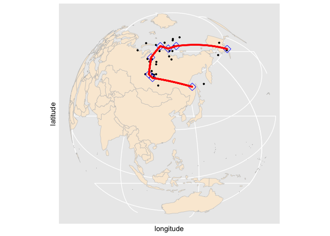
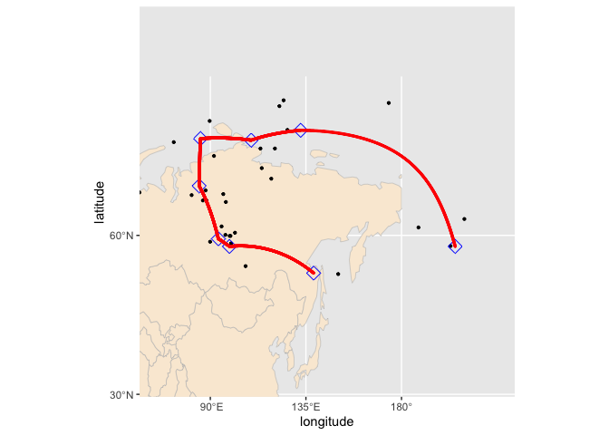

This package offers a method of fitting a smooth path to a given set of noisy spherical data observed at known time. It implements a piecewise geodesic curve fitting method on the unit sphere based on a velocity-based penalization scheme. The proposed approach is implemented using the Riemannian block coordinate descent algorithm. To understand the algorithm, you can refer to the paper titled “Intrinsic spherical smoothing method based on generalized Bézier curves and sparsity inducing penalization” by Bak, K. Y., Shin, J. K., & Koo, J. Y. (2023) for the case of order 1. Additionally, this package includes various functions necessary for handling spherical data.
- Authorss:
- Jae-Hwan Jhong, Chungbuk National University, jjh25@cbnu.ac.kr, ORCID:0000-0003-2266-4986
- Seyoung Lee, Sungshin Women’s University, 20210861@sungshin.ac.kr
- Ja-Yong Koo, Korea University, jykoo@korea.ac.kr
- Kwan-Young Bak, professor at Sungshin Women’s University, kybak@sungshin.ac.kr, ORCID:0000-0002-4541-160X
Example: APW path fitting
A polar wander dataset presented in Kent and Irving (2010). The 17 Triassic/Jurassic cratonic poles from other major cratons are rotated into North American coordinates and combined with the 14 observations from North America. Our method is applied to these 31 observations ranging in age from 243 to 144 Ma (millions of years ago), which covers the late Triassic and Jurassic periods. The first column represents the time points, and the remaining two columns provides the observed spherical coordinates.
library(spheresmooth)
data(apw_spherical)Convert the data to Cartesian coordinates.
apw_cartesian = spherical_to_cartesian(apw_spherical[, 2:3])Generate a knot sequence along the time domain with a specified dimension and a lambda sequence.
t = apw_spherical[, 1]
dimension = 15
initial_knots = knots_quantile(t, dimension = dimension)
lambda_seq = exp(seq(log(1e-07), log(1), length = 40))Fit the penalized piecewise gedesic curve to the data and obtain the control points for the optimal complexity parameter.
fit = penalized_linear_spherical_spline(t = t, y = apw_cartesian,
dimension = dimension,
initial_knots = initial_knots,
lambdas = lambda_seq)
# choose a curve that minimizes the BIC
best_index = which.min(fit$bic_list)
best_index
#> [1] 33
# obtained control points for the piecewise geodesic curve
fit[[best_index]]$control_points
#> [,1] [,2] [,3]
#> [1,] -0.48039447 -0.2266981 0.8472480
#> [2,] -0.11927705 0.1300343 0.9843089
#> [3,] -0.06869155 0.1967739 0.9780396
#> [4,] 0.01640654 0.2026538 0.9791130
#> [5,] 0.03231127 0.3512434 0.9357265
#> [6,] -0.03372888 0.5085848 0.8603510
#> [7,] -0.08310953 0.5246722 0.8472378
#> [8,] -0.45295783 0.3987197 0.7974032The following packages are loaded to visualize the result.
# install.packages("rworldmap")
# install.packages("ggplot2")
# install.packages("sf")
library(rworldmap)
#> Loading required package: sp
#> ### Welcome to rworldmap ###
#> For a short introduction type : vignette('rworldmap')
library(ggplot2)
library(sf)
#> Warning: package 'sf' was built under R version 4.3.3
#> Linking to GEOS 3.11.0, GDAL 3.5.3, PROJ 9.1.0; sf_use_s2() is TRUEVisualized the fitted result.
worldMap = getMap()
worldMap_sf = st_as_sf(worldMap)
cp_best = cartesian_to_spherical(fit[[best_index]]$control_points)
cp_long_lat = cp_best * 180 / pi
cp_long_lat_df = data.frame(latitude = 90-cp_long_lat[, 1],
longitude = cp_long_lat[,2])
apw_spherical_df = data.frame(apw_spherical)
apw_spherical_df$latitude = 90 - apw_spherical_df$latitude * 180 / pi
apw_spherical_df$longitude = apw_spherical_df$longitude * 180 / pi
fitted_geodesic_curve = piecewise_geodesic(seq(0, 1, length = 2000),
fit[[best_index]]$control_points,
fit[[best_index]]$knots)
fitted_cs = cartesian_to_spherical(fitted_geodesic_curve)
fitted_cs_long_lat = fitted_cs * 180 / pi
fitted_cs_long_lat_df = data.frame(latitude = 90 - fitted_cs_long_lat[, 1],
longitude = fitted_cs_long_lat[, 2])
apw_spherical_df_sf = st_as_sf(apw_spherical_df,
coords = c("longitude", "latitude"), crs = 4326)
cp_long_lat_df_sf = st_as_sf(cp_long_lat_df,
coords = c("longitude", "latitude"), crs = 4326)
fitted_cs_long_lat_df_sf = st_as_sf(fitted_cs_long_lat_df,
coords = c("longitude", "latitude"), crs = 4326)
worldmap = ggplot() +
geom_sf(data = worldMap_sf, color = "grey", fill = "antiquewhite") +
geom_sf(data = apw_spherical_df_sf, size = 0.8) +
geom_sf(data = cp_long_lat_df_sf, color = "blue", shape = 23, size = 4) +
geom_sf(data = fitted_cs_long_lat_df_sf, color = "red", size = 0.5) +
xlab("longitude") +
ylab("latitude") +
scale_y_continuous(breaks = (-2:2) * 30) +
scale_x_continuous(breaks = (-4:4) * 45) +
coord_sf(crs = "+proj=ortho +lat_0=38 +lon_0=120 +y_0=0 +ellps=WGS84 +no_defs")
worldmap
We can obtain a zoomed version as follows.
mar = 20
zoommap = ggplot() +
geom_sf(data = worldMap_sf, color = "grey", fill = "antiquewhite") +
geom_sf(data = apw_spherical_df_sf, size = 0.8) +
geom_sf(data = cp_long_lat_df_sf, color = "blue", shape = 23, size = 4) +
geom_sf(data = fitted_cs_long_lat_df_sf, color = "red", size = 0.5) +
xlab("longitude") +
ylab("latitude") +
scale_y_continuous(breaks = (-2:2) * 30) +
scale_x_continuous(breaks = (-4:4) * 45) +
coord_sf(xlim = c(min(cp_long_lat_df$longitude) - mar,
max(cp_long_lat_df$longitude) + mar),
ylim = c(min(cp_long_lat_df$latitude) - mar,
max(cp_long_lat_df$latitude) + mar))
zoommap